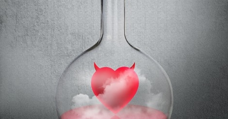
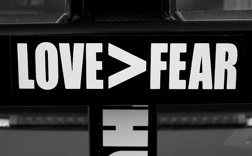

（红藻氨酸/ 译）最近，伯明翰大学的研究者们在《神经科学与生物行为学综述》（Neuroscience and Biobehavioral Reviews）上发表文章，指出在对人类行为的影响方面，被称为“爱情荷尔蒙”的催产素（Oxytocin）和酒精之间有着令人讶异的相似点。
减轻焦虑，殊途同归？
这篇文章汇总了先前关于这两种化合物的多项研究，并详细介绍了催产素与酒精在影响人类行为方面的相似点。这个研究小组告诫称，我们经常用“爱情荷尔蒙”这个昵称来代指催产素的时候，其实忽略了它的“黑暗面”——它与酒精对我们的影响，相似程度远超先前所料。
催产素和酒精给人的印象有着天渊之别，然而一系列研究提示，这两种物质可能对人们的行为有着相似的影响。图片来源：shutterstock友情提供
催产素是一种由下丘脑合成并由垂体后叶释放的神经肽类激素，在分娩与母婴关系中扮演重要角色。而在近期，许多研究证实了催产素对我们大脑的影响：它在我们的社会互动与同恋人的关系中起着关键的作用——它也因此得了个“爱情荷尔蒙”的雅号。
催产素可以增加亲社会行为的发生，使人更加利他、慷慨、有同理心，并且更加愿意去信任他人。这种对于社会认知的影响是通过抑制前额叶与边缘联合皮层的活动来起作用的。这个过程减轻了那些使我们逃避社交的情绪，比如恐惧、焦虑与压力。
伯明翰大学心理学系的伊恩·米切尔（Ian Mitchell）博士解释说：“我们认为这是一个值得探索的领域，于是汇总了关于催产素与酒精作用的现有研究。结果，我们被两者间惊人的相似性震惊了。
“它们看似与大脑中的不同受体结合，但却在前额叶皮层与边缘结构引起了同样的γ-氨基丁酸（GABA）传输激活。这些神经回路控制着我们对压力或焦 虑的感知——在面试乃至鼓起勇气邀请某人与自己约会这样的社交场合尤其如此。”摄入催产素或者酒精这样的化学物质，可以使这样的局面不那么令人“两股战 战，几欲先走”。
酒壮怂人胆，催产素也能
研究者们认为，这种对焦虑的抑制作用，也可以解释为什么“酒壮怂人胆”对人有这么大的诱惑——尤其是在“第一次约会”这类社交场合。“用喝酒来平息 紧张感，也就是所谓的‘酒壮怂人胆’，其实是用它来对抗扑面而来的恐惧和焦虑。” 斯蒂芬·格勒斯皮（Steven Gillespie）博士说，“而在实验室里，催产素似乎起到了同样的作用。”
当通过鼻喷剂形式给药时，催产素几乎和喝酒有着完全一致的积极效应。不过，研究者们也警告说，他们反对为了在困难时刻增加点自信而以任何形式给自己用药——不管你用的是催产素还是酒精。
除了频繁饮酒会带来的健康问题，催产素和酒精也会产生一些不太美好的社会认知效应——它们会使人们变得更好斗、更自负，令人嫉妒那些他们认为是对手 的家伙，并为自己所在组织的利益而伤害他人的权益。恐惧感的存在通常能让我们避免陷入麻烦，但这些化合物能干扰我们的恐惧感。因此，我们也经常听说那些喝 了酒的家伙会冒平时压根不会冒的险。
当“爱情荷尔蒙”削弱了人们的恐惧感，人们可能会去冒平常不会冒的风险。图片来源：understandfasting.com
不管是喷两下催产素还是来一杯酒，这种能增强信任感知的举动会对我们对待他人的方式造成深远影响。然而，画虎画皮难画骨，知人知面不知心，这种信任随后也将使因冒不必要风险而带来的危险性升高。
格勒斯皮博士补充说：“我并不觉得某天人们会将催产素当作酒精的替代品来使用，但它确实是一种很神奇的神经化学物质，并且，除了那些风花雪月的事 儿，它也很有可能被用在治疗心理或精神疾病上。透彻地了解它是如何抑制特定行为模式、如何改变人的行为，将可能给许多人带来切实的好处。但愿这项研究能让 我们从一个新的视角来思考这个问题，并启发新的思路。”
（编辑：Calo）
参考文献：
- Mitchell, Ian J., Steven M. Gillespie, and Ahmad Abu-Akel. "Similar effects of intranasal oxytocin administration and acute alcohol consumption on socio-cognitions, emotions and behaviour: Implications for the mechanisms of action." Neuroscience & Biobehavioral Reviews 55 (2015): 98-106.
文章题图：shutterstock友情提供